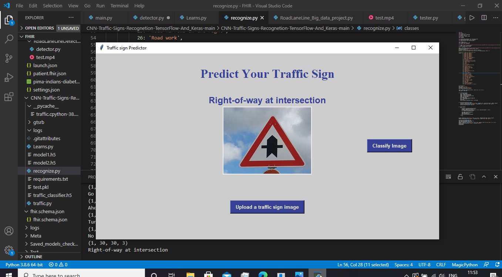

<!DOCTYPE HTML>
<!--
	Miniport by HTML5 UP
	html5up.net | @ajlkn
	Free for personal and commercial use under the CCA 3.0 license (html5up.net/license)
-->
<html>
	<head>
		<title>Syed Affan Hameed Portfolio</title>
		<meta charset="utf-8" />
		<meta name="viewport" content="width=device-width, initial-scale=1, user-scalable=no" />
		<link rel="stylesheet" href="assets/css/main.css" />
	</head>
	<body class="is-preload">

		<!-- Nav -->
			<nav id="nav">
				<ul class="container">
					<li><a href="#top">Top</a></li>
					<li><a href="#work">Work</a></li>
					<li><a href="#portfolio">Portfolio</a></li>
					<li><a href="#contact">Contact</a></li>
				</ul>
			</nav>

		<!-- Home -->
			<article id="top" class="wrapper style1">
				<div class="container">
					<div class="row">
						<div class="col-4 col-5-large col-12-medium">
							<span class="image fit"></span>
						</div>
						<div class="col-8 col-7-large col-12-medium">
							<header>
								<h1>Hi. I'm <strong>Syed Affan Hameed</strong>.</h1>
							</header>
							<p>And this is my <strong>humble</strong> portfolio to show case my latest builds, projects and skills and for myself to keep track of them :).</p>
							<a href="#work" class="button large scrolly">Learn about what I do</a>
						</div>
					</div>
				</div>
			</article>

		<!-- Work -->
			<article id="work" class="wrapper style2">
				<div class="container">
					<header>
						<h2>Here's all the stuff I do.</h2>
						<p><b>I am a well rounded programmer looking to obtain industry work experience.I have worked on many projects in variety of domains.I am proficent in mutliple programming languages and I am keen on learning new skills.</b></p>
					</header>
					<div class="row aln-center">
						<div class="col-4 col-6-medium col-12-small">
							<section class="box style1">
								<span class="image fit"></span>
								<h3>Mobile Application Development</h3>
								<p>I am a passionate Android developer, I like to create application to increase my productivity.Mobile application development is a very precision seeking work and I keep updating and adopting the new technologies that get incorporated in this field as well as master the legacy concepts.</p>
							</section>
						</div>
						<div class="col-4 col-6-medium col-12-small">
							<section class="box style1">
								<span class="image fit"></span>
								<h3>Self-Driving Car Software development</h3>
								<p>Here is another one my passions 'Self-Driving Cars', I strive to create astute softwares for various functionalities involved in making the Car atuotmatic and Drive without human supervision.Necessary features like road lane Line detection, traffic Signal recognition, Obstacle detection and other crucial software features that make Intelligent Computer aided driving possible.</p>
							</section>
						</div>
						<div class="col-4 col-6-medium col-12-small">
							<section class="box style1">
								<span class="image fit"></span>
								<h3>Google Cloud platform</h3>
								<p>Cloud Computing is rapidly emerging technology and the very notion that high compution tasks can be performed without having the on-premise infrastructure is promising, and I dont see why companies in the future start to operate wiht this as standard. I have earned certifications of many courses in Google Cloud Platform, and I strive to get most GCP professional certificates</p>
							</section>
						</div>
					</div>
					<footer>
						<p>For me Learning never stops, I belive consistent learning thorugh educations and mentorship drives us towards our goal. These mentioned above are ones I have gained much knowledge of overtime.</p>
						<a href="#portfolio" class="button large scrolly">See some of my recent work</a>
					</footer>
				</div>
			</article>

		<!-- Portfolio -->
			<article id="portfolio" class="wrapper style3">
				<div class="container">
					<header>
						<h2>Here’s some stuff I made recently.</h2>
						<p>The complete code for these projects is uploaded to Github.</p>
					</header>
					<div class="row">
						<div class="col-4 col-6-medium col-12-small">
							<article class="box style2">
								<a href="#" class="image featured"></a>
								<h3><a href="https://github.com/Syed-Affan-Hameed/Road_Lane_Line_Detetor.git">Road Lane and Lines Detection</a></h3>
								<p>A Characteristic feature of modern seld driving cars that is detecting road lane and lines detection.This functionality is achieved through OpenCV(Open source Computer Vision library).I made this project in Python.----Click on the project title to see the code.</p>
							</article>
						</div>
						<div class="col-4 col-6-medium col-12-small">
							<article class="box style2">
								<a href="#" class="image featured"></a>
								<h3><a href="https://github.com/Syed-Affan-Hameed/Traffic_sign_recogniser">Traffic Sign Detection</a></h3>
								<p>A vital feature in Automatic cars these days is the ability to detect and recognise the traffic signs at real timea dnmake decisions based on it.The implementation is a bit complex as the model should recognise the traffic sign board on any given angle and comparitively less visibility.I made this projects with the help of Machine Learning Algortihm,using Convolution Neural Networks.</p>
							</article>
						</div>
						<div class="col-4 col-6-medium col-12-small">
							<article class="box style2">
								<a href="#" class="image featured"></a>
								<h3><a href="https://github.com/Syed-Affan-Hameed/FaceBook_Post_Analysis.git">Facebook Posts Analyzer</a></h3>
								<p>I created this project to study the US 2016 elections, Pro Republican and Pro Democrats as a mini-project for one of my core subjects to combine data analysis with machine learning(sentiment analysis using vader).Following the Cambridge Analytica Privacy breach case.</p>
							</article>
						</div>
						<div class="col-4 col-6-medium col-12-small">
							<article class="box style2">
								<a href="#" class="image featured"></a>
								<h3><a href="https://github.com/Syed-Affan-Hameed/Bitcoin-Price-Predictor/tree/master">Bitcoin Price Predcitor</a></h3>
								<p>As economies of countries across the world were crippling, crytocurrency was rising exponentially and this persuaded me to make an application that would predict the price of Cryptocurrencies.There is this popular machine learning model that comes in handy in this kind of development called LSTM(Long Short Term Memory) which are essentially RNNs .</p>
							</article>
						</div>
						<div class="col-4 col-6-medium col-12-small">
							<article class="box style2">
								<a href="#" class="image featured"></a>
								<h3><a href="https://github.com/Syed-Affan-Hameed/Employee-Management-System">Employee Management System</a></h3>
								<p>This was one of my first projects that I made way back.This is mainly a java based Generic Employee Management System.This project was importent for me to learn various aspects of application development.</p>
							</article>
						</div>
						<div class="col-4 col-6-medium col-12-small">
							<article class="box style2">
								<a href="#" class="image featured"></a>
								<h3><a href="https://github.com/Syed-Affan-Hameed/BookHub/tree/master">BookHub</a></h3>
								<p>    A PDF/Ebook reader designed for Writers.Publishers,Editors and for potential new avid readers to learn the language and literature along with the pleasure of joyful reading.Here is a a new concept in the world of PDF/ Ebook Reader Application. Focused on the learning the literature along with enjoyable reading by improved ease of use and knowledge gain features!. I have designed this application for budding writers, editors, publishers to have digitised ease in the intented process. Kindly navigate to the master branch to view the Code of the current version of BookHub. The application still awaits some important commits. The App is being reviewed by my peers. Thus this app is still in peer testing phase not uploaded to Play store yet.</p>
							</article>
						</div>
					</div>
					<footer>
						<p>These projects are some of which are important to me, I keep working on new and exciting projects and I will make up a practice to update this list regularly. Thanks for checking them out :).</p>
						<a href="#contact" class="button large scrolly">Get in touch with me</a>
					</footer>
				</div>
			</article>

		<!-- Contact -->
			<article id="contact" class="wrapper style4">
				<div class="container medium">
					<header>
						<h2>Have me make stuff for you.</h2>
						<p style="color:#ffffff;">Contact me: syedaffanhameed@gmail.com.</p>
					</header>
					<div class="row">
						<div class="col-12">
							
						</div>
						<div class="col-12">
							<hr />
							<h3>Find me on ...</h3>
							<ul class="social">
								
								<li><a href="https://www.linkedin.com/in/syed-affan-hameed-b550941ba/" class="icon brands fa-linkedin-in"><span class="label">LinkedIn</span></a></li>
								
		
								<li><a href="https://github.com/Syed-Affan-Hameed" class="icon brands fa-github"><span class="label">Github</span></a></li>
								
							<!--	<li><a href="#" class="icon solid fa-gmail"><span>Email</span></a></li>
								<li><a href="#" class="icon brands fa-instagram"><span>Instagram</span></a></li>
								<li><a href="#" class="icon brands fa-foursquare"><span>Foursquare</span></a></li>
								<li><a href="#" class="icon brands fa-skype"><span>Skype</span></a></li>
								<li><a href="#" class="icon brands fa-soundcloud"><span>Soundcloud</span></a></li>
								<li><a href="#" class="icon brands fa-youtube"><span>YouTube</span></a></li>
								<li><a href="#" class="icon brands fa-blogger"><span>Blogger</span></a></li>
								<li><a href="#" class="icon brands fa-flickr"><span>Flickr</span></a></li>
								<li><a href="#" class="icon brands fa-vimeo"><span>Vimeo</span></a></li>
								-->
							</ul>
							<hr />
						</div>
					</div>
					<footer>
						<ul id="copyright">
							<li>&copy; Syed Affan Hameed.</li><li>Design: <a href="http://html5up.net">HTML5 UP</a></li>
						</ul>
					</footer>
				</div>
			</article>

		<!-- Scripts -->
			<script src="assets/js/jquery.min.js"></script>
			<script src="assets/js/jquery.scrolly.min.js"></script>
			<script src="assets/js/browser.min.js"></script>
			<script src="assets/js/breakpoints.min.js"></script>
			<script src="assets/js/util.js"></script>
			<script src="assets/js/main.js"></script>

	</body>
</html>